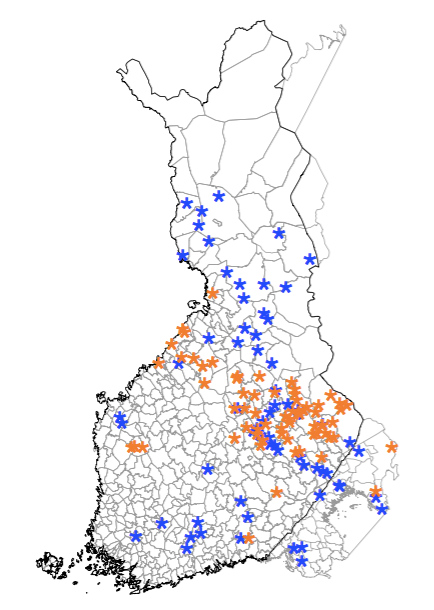
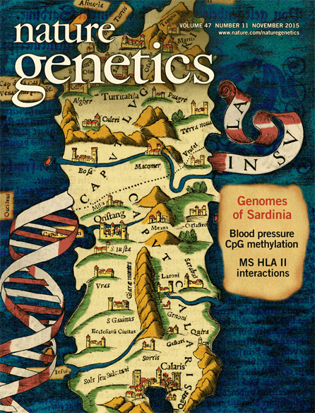
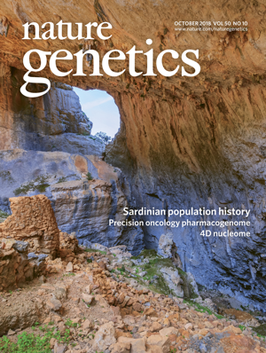
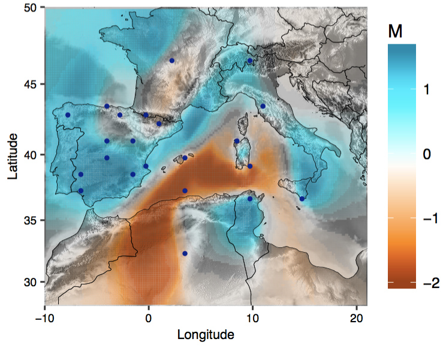
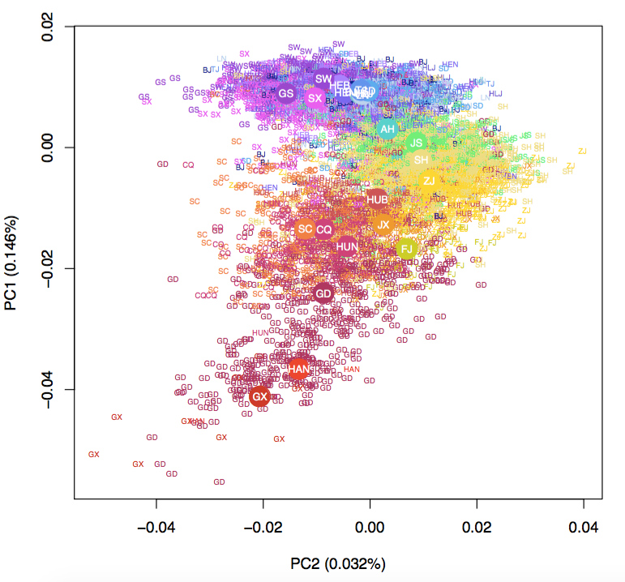
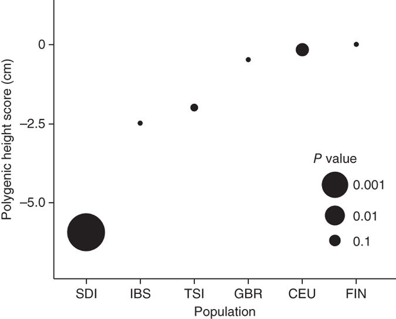

Research
The overarching theme of our research group is to use genetic approaches, both empirical and theoretical, to understand how evolutionary forces shaped the genetic architecture of complex traits within and between populations. To this end, we have been involved in a number of past and ongoing medical genetics studies in mapping genetic loci underlying human complex traits. We are also continually interested in investigating the evolutionary forces, namely demography and selection, that shaped the pattern of genetic variability and phenotypic distribution. We are particularly interested in diverse, global human populations and our successes result from collaborating with innovative colleagues and thriving in resourceful consortiums.
The focus of the group mainly lies in the following areas:
Genetic basis of complex traits in diverse populations
  Our group has led past and ongoing genetic studies in mapping genetic loci underlying human complex phenotypes such as anthropometric and cardiometabolic traits. Our focus has always been in studying diverse populations with special demographic history. For example, we conducted one of the first GWAS of African-ancestry individuals for anthropometric traits (PLoS Genet. 2010; Hum. Mol. Genet. 2010). More recently, we leveraged the special population histories to map novel rare variant associated with height in Sardinians (Nat. Genet. 2015), as well as discovering scores of novel rare alleles associated with quantitative cardiometabolic traits in Northern and Eastern Finns (Nature 2019).
We are currently focusing on understanding the genetic architecture of complex traits in diverse, understudied, and underserevd populations. There is a huge opportunity to leverage the evolutionary history of diverse populations to design and interpret genetic mapping studies (Front. Genet. 2021). However, we have shown that for diverse populations such as the Native Hawaiians, the lack of representation in genomic resources (e.g. a Polynesian haplotype reference panel for imputation) has been prohibitive to research (Hum. Mol. Genet. 2020). Therefore even though we know that epidemiologically Native Hawaiians have elevated risk for certain complex diseases, and we can show that this disease risk correlat with proportion of Polynesian genetic ancestry (but note that ancestry captures also non-genetic effects; PLoS Genet. 2021), we know very little of population-specific alleles that impacts disproportionately in these populations and thereby contributing to health disparities between populations. We are currently generating whole-genome sequencing data and constructing the genomic resources necessary to accelerate research in Polynesian populations. We are also forming a consortium of Pacific Island populations, including Native Hawaiians, Samoans, and other Pacific Islanders. In aggregate we will reach >13,000 Pacific Islanders with the goals of identifying more population-specific variants such as CREBRF (Minster et al. Nat. Genet. 2016) across Pacific Islanders. We are also trying to strengthen our interactions and engagement with the Native community, through interactions with the Native Hawaiian Community Advisory Board estsablished by the University of Hawaii Cancer Center, as well as through planned focus group to understand the community concerns with participating in genomic research.
In addition to population-specific studies, we are also taking an multiethnic approach to illuminate the complex genetic architecture of quantitative traits and diseases. For example, we were part a multi-ethnic consortium that identified 71 novel loci associated with hematological traits that are not found in European ancestry populations (Cell 2020). Moreover, We have performed multiethnic meta-analysis in a California-based cohort for Acute Lymphoblastic Leukemia (ALL) and identified three potential novel loci (Leukemia 2022). We are co-leading the genetic analysis of Latino and international multi-ethnic consortium to detect additional variants associated with ALL. Together through the Childhood Leukemia International Consortium (CLIC), we have accrued >10,000 cases and >100,000 controls in multiple ethnicities for genetic mapping and fine-mapping.
Fine-scale structure and demographic history of global populations
  One burgeoning movement in medicine is the incorporation of evolutionary principles. Medicine is classically concerned with only the most proximate causes of dysfunction and views diseases as defects of a once perfect machine. In contrast, evolutionary medicine strives to view diseases as the consequence of trade-offs and vulnerabilities due to interactions with our past environments. However, we need to first understand the demographic history and population structure of the population of interest, which in turns guide our design of the genetic studies to understand the genetic architecture and evolutionary courses of complex traits.
 To this end, we have investigated the fine-scale structure and history of human populations known to have a unique past or relatively understudied. We found geographical features that led to the genetic barrier and population structure in Sardinia (Nat. Genet. 2018). We conducted one of the first examinations of population structure in Han Chinese living in Taiwan (Hum. Mol. Genet. 2016), and identified additional geographical axis using whole genome sequence data in Han Chinese living in China (Mol. Biol. Evol. 2018). We also characterized the fine-scale structure and the consequent enrichment of deleterious variation in Northern and Eastern Finland, thereby enabled unprecedented power to map rare variant associations (Nature 2019). Future goals will continue to investigate understudied diverse populations, such as the Native Hawaiians in the Multiethnic Cohort, Han Chinese and Aboriginal Taiwanese in Taiwan Biobank, or East Asians living in the United States. We will aim to understand in finer details of the population structure and admixture history of these populations to shed light on how differential susceptibility to diseases across populations may be rooted in their demographic histories.
We are also developing innovative methods. Thanks to recent advancements that allows scalable inference of Ancestral Recombination Graphs genome-wide (Spiedel et al. Nat. Genet. 2018; Kelleher et al. Nat. Genet. 2018), we can approximate well the underlying genealogy that relates every one in the sample. Based on these sequences of genealogical trees, we proposed a novel metric of genetic relationship matrix (GRM) that computes the expected relatedness between pairs of individual given the genealogies. We found this "expected GRM" or eGRM is more sensitive to recent population structure, and has the flexibility and potential to detect the varying nature of structure over time (AJHG 2022).
Natural Selection and Polygenic Adaptation
 Demographic processes such as long-term isolation and bottleneck are not the only forces that shape the pattern of variation in our genome. Natural selection is another important factor that contributes to our genomic pattern of variation and distribution of complex traits. We have conducted genome-wide scans for signals of selection in human populations (Mol. Biol. Evol. 2018), as well as focusing on the polygenic signature of adaptation of copmlex traits, namely height. Using genome-wide summary statistics from GWAS we were the first to suggest that differentiation of adult human height across Europe is driven by polygenic adaptation (Nat. Genet. 2012). We later also demonstrated that the significant shorter stature in Sardinia is also driven by polygenic adaptation (Nat. Genet. 2015). Our study in human height stimulated the development of many methods aimed to detect such signatures in other complex traits as well as continued and ongoing discussion on interpreting polygenic scores from large scale GWAS (eLife 2019; also see Berg et al. eLife 2019). In light of the new insight that subtle uncorrected population structure could bias analysis of polygenic adaptation, we now leverage large-scale biobank data from distant, unrelated population such as the Biobank of Japan (BBJ) to unbiasly assess polygenic adaptation in Europeans. We found that differences in height between Sardinians and mainland Europeans are robustly attributed to polygenic adaptation, and we continue to find evidence consistent with natural selection driving the differences in height across mainland Europe, although the effect is weaker than previously believed (AJHG 2020). Using the same robust ascertainment approach, we also found that height-associated loci remain exceptionally differentiated across global populations, again supporting some form of natural selection that results in differentiation of height across populations (EJHG 2021)
Moving forward, we will continue to investigate these imprints left in our genome by Natural Selection, and integrate external non-genetic information to contextualize these findings, which may reveal cases where increased susceptibility of certain traits may be a trade-off due to an evolutionary benefit in our past. For example, we will examine if elevated risk of childhood leukemia found in Latino Americans is due to selection of specific alleles associated with protection against infection in their past history
Datasets and Software Resources
Data Release (Chiang et al. Mol. Bio. Evol. 2018)
- List of > 82K novel variants found with MAF > 5% in > 10,000 Whole genome sequenced Han Chinese but not found in 1000G CHB+CHS populations. When also found in ExAC or GNOMAD East Asians, the frequencies are annotated. All coordinates in hg19. file
- Allele frequencies stratified by provinces can be found at GGV (with google or twitter login, under "Converge"). link
- Sample birth location of the Han Chinese used in PCA. file
Expected Genetic Relationship Matrix (Fan et al. AJHG 2022): constructs the expected GRM given inferred ancestral recombination graphs. github
triple-liftOver (Sheng et al. bioRxiv 2022): identifies variants mapping into a region inverted between genome builds to avoid downstream analysis problem such as imputation. github
Selected Publications
You can check pubmed or google scholar for the complete list of publication from the lab.
Group members are bolded; *, # denote equal contributions
- Sheng X, Xia L, Conti DV, Haiman CA, Kachuri L, Chiang CWK. "Inverted genomic regions between reference genome builds in humans impact imputation accuracy and decrease the power of association testing." bioRxiv. 2022. link
- Fan C, Mancuso N*, Chiang CWK*. “A genealogical estimate of genetic relationships.” Am J Hum Genet. 2022 Apr 6:S0002-9297(22)00112-4. doi: 10.1016/j.ajhg.2022.03.016. link
- Jeon S, de Smith AJ, Li S, Chen M, Chan TF, Muskens IS, Morimoto LM, Dewan AT, Mancuso N, Metayer C, Ma X, Wiemels JL, Chiang CWK. “Genome-wide trans-ethnic meta-analysis identifies novel susceptibility loci for childhood acute lymphoblastic leukemia.” Leukemia. 2022 Mar;36(3):865-868. doi: 10.1038/s41375-021-01465-1. Epub 2021 Nov 8. link
- Chiang CWK. “The opportunities and challenges of integrating population histories into genetic studies of diverse populations: a motivating example from Native Hawaiians.” Front Genet. 2021 Sep 27;12:643883. doi: 10.3389/fgene.2021.643883. link.
- Chen M and Chiang CWK. "Allele frequency differentiation at height-associated SNPs among contin-ental human populations.” Eur J Hum Genet. 2021 Oct;29(10):1542-1548. doi: 10.1038/s41431-021-00938-2. Epub 2021 Jul 15. link.
- Sun H*, Lin M*, Russell EM, Minster RL, Chan TF, Dinh BL, Naseri T, Reupena MS, Lum-Jones A, OLaGA Study Group, Cheng I, Wilkens LR, Le Marchand L, Haiman CA, Chiang CWK. “The impact of global and local Polynesian genetic ancestry on complex traits in Native Hawaiians.” PLoS Genet. 2021 Feb 11;17(2):e1009273. doi: 10.1371/journal.pgen.1009273. link.
- Chen MH, Raffield LM, Mousas A, Sakaue S, ..., Chiang CWK, Li B, Loos RJF, Astle WJ, Evangelou E, Sankaran VG, Okada Y, Soranzo N, Johnson AD, Reiner AP, Auer PL, Lettre G. "Trans-ethnic and ancestry-specific blood cell genetics in 746,667 individuals from 5 global populations." Cell. 2020 Sep 3;182(5):1198-1213.e14. link.
- Lin M, Caberto C, Wan P, Li Y, Lum-Jones A, Tiirikainen M, Pooler L, Nakamura B, Sheng X, Porcel J, Lim U, Setiawan VW, Le Marchand L, Wilkens LR, Haiman CA, Cheng I, Chiang CWK. “Population specific reference panels are crucial for the genetic analyses of Native Hawaiians: an example of the CREBRF locus.” Hum Mol Genet. 2020 Aug 3;29(13):2275-2284. doi: 10.1093/hmg/ddaa083. link.
- Chen M, Sidore C, Akiyama M, Ishigaki K, Kamatani Y, Schlessinger D, Cucca F, Okada Y, Chiang CWK. “Evidence of polygenic adaptation at height-associated loci in Sardinians using Biobank Japan.” Am J Hum Genet. 2020 Jul 2;107(1):60-71. doi: 10.1016/j.ajhg.2020.05.014. Epub 2020 Jun 12. link
- Locke AE*, Steinberg KM*, Chiang CWK*, Service S, Havulinna A, Stell L, Pirinen M, Abel HJ, Chiang CC, Fulton RS, Jackson AU, Kang CJ, Kanchi KL, Koboldt DC, Larson DE, Nelson J, Nicholas TJ, Pietila A, Ramensky V, Ray D, Scott LJ, Stringham HM, Vangipurapu J, Welch R, Yajnik P, Yin X, Eriksson JG, Ala-Korpela M, Jarvelin MR, Manniko M, Laivouri H, FinnGen Project, Dutcher SK, Stitziel NO, Wilson RK, Hall IM, Sabatti C, Palotie A, Salomaa V, Laakso M, Ripatti S, Boehnke M, Freimer NB. “Exome sequencing of Finnish isolates enhances rare-variant association power.” Nature. 2019 Aug;572(7769):323-328. doi: 10.1038/s41586-019-1457-z. Epub 2019 Jul 31. link
- Sohail M, Maier RM, Ganna A, Bloemendal A, Martin AR, Turchin MC, Chiang CWK, Hirschhorn J, Daly MJ, Patterson N, Neale B, Mathieson I, Reich D, Sunyaev SR. "Polygenic adaptation on height is overestimated due to uncorrected stratification in genome-wide association studies." Elife. 2019 Mar 21;8. pii: e39702. doi: 10.7554/eLife.39702. link
- Chiang CWK, Mangul S, Robles C, Sankararaman S. "A comprehensive map of genetic variation in the world's largest ethnic group - Han Chinese." Mol Bio Evol. 2018 Nov 1;35(11):2736-2750. doi: 10.1093/molbev/msy170. Epub 2018 Aug 30. link
- Chiang CWK, Marcus J, Sidore C,Al-asadi H, Biddanda A, Zoledziewska M, Pistis G, Steri M, Lohmueller K, Abecasis G, Schlessinger D, Cucca F, Novembre J. "Genomic History of the Sardinian Population" Nat Genet. 2018 Oct;50(10):1426-1434. Epub 2018 Sep 17. link
- Chen CH, Yang JH, Chiang CWK, Hsiung CN, Wu PE, Chang LC, Chang J, Song IW, Yang SL, Chen YT, Liu FT, Shen CY. "Population structure of Han Chinese in the modern Taiwanese population based on 10,000 participants in the Taiwan Biobank project." Hum Mol Genet. 2016 Dec 15;25(24):5321-5331.link
- Zoledziewska M*, Sidore C*, Chiang CWK*, Sanna S*, Mulas A, Steri M, Busonero F, Marcus JH, Marongiu M, Maschio A, Ortega Del Vecchyo VD, Floris M, Meloni A, Delitala A, Meloni A, Delitala A, Concas MP, Murgia F, Biino G, Vaccargiu S, Nagaraja R, Lohmueller KE; UK10K Consortium, Timpson NJ, Soranzo N, Tachmazidou I, Dedoussis G, Zeggini E; Understanding Society Scientific Group, Uzzau S, Jones C, Lyons R, Angius A, Abecasis GR#, Novembre J#, Schlessinger D#, Cucca F#. "Height-reducing variants and selection for short stature in Sardinia." Nat Genet. 2015 Nov; 47(11):1352-6. doi: 10.1038/ng.3403. Epub 2015 Sep 14. link
- Turchin MC*, Chiang CWK*, Palmer CD, Sankararaman S, Reich D, Genetic Investigation of ANthropometric Traits (GIANT) Consortium, Hirschhorn JN. "Evidence of widespread selection on standing variation in Europe at height-associated SNPs." Nat Genet. 2012 Sep;44(9):1015-9. doi: 10.1038/ng.2368. Epub 2012 Aug 19. link
- Chiang CWK, Liu CT, Lettre G, Lange LA, Jorgensen NW, Keating BJ, Vedantam S, Nock NL, Franceschini N, Reiner AP, Demerath EW, Boerwinkle E, Rotter JI, Wilson JG, North KE, Papanicolaou GJ, Cupples LA, Genetic Investigation of ANthropometric Traits (GIANT) consortium, Murabito JM, Hirschhorn JN. "Ultraconserved elements in the human genome: association and transmission analyses of highly constrained single-nucleotide polymorphisms." Genetics. 2012 Sep;192(1):253-66. Epub 2012 Jun 19. link
- Kang SJ*, Chiang CWK*, Palmer CD*, Tayo BO, Lettre G, Butler JL, Hackett R, Adeyemo AA, Guiducci C, berzins I, Nguyen TT, Feng T, Luke A, Shriner D, Ardlie K, Rotimi C, Wilks R, Forrester T, McKenzie CA, Lyon HN, Cooper RS, Zhu X#, Hirschhorn JN#. "Genome wide association of anthropometric traits in African and African derived populations." Hum Mol Genet. 2010 Jul 1;19(13):2725-38. Epub 2010 Apr 16. link
- Chiang CWK, Gajdos ZKZ, Korn JM, Kuruvilla FG, Butler JL, Hackett R, Guiducci C, Nguyen TT, Wilks R, Forrester T, Haiman CA, Henderson KD, Le Marchand L, Henderson BE, Palmert MR, McKenzie CA, Lyon HN, Cooper RS, Zhu X, Hirschhorn JN. "Rapid assessment of genetic ancestry inpopulatiosn of unknown origin by genome-wide genotyping of pooled samples." PLoS Genetics. 2010;6(3):e1000866. Epub 2010 Mar 5. link